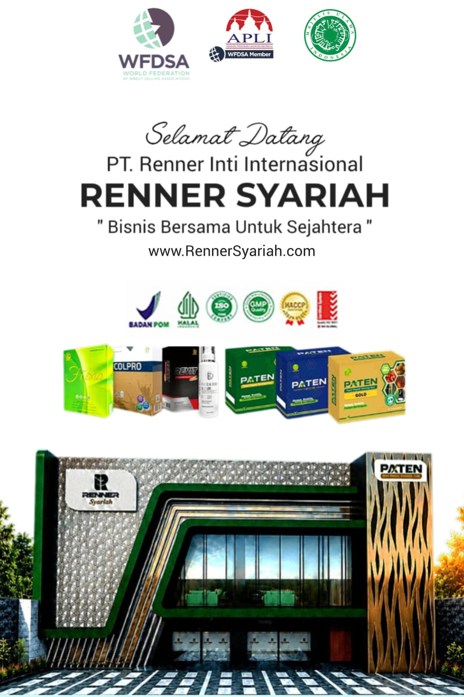
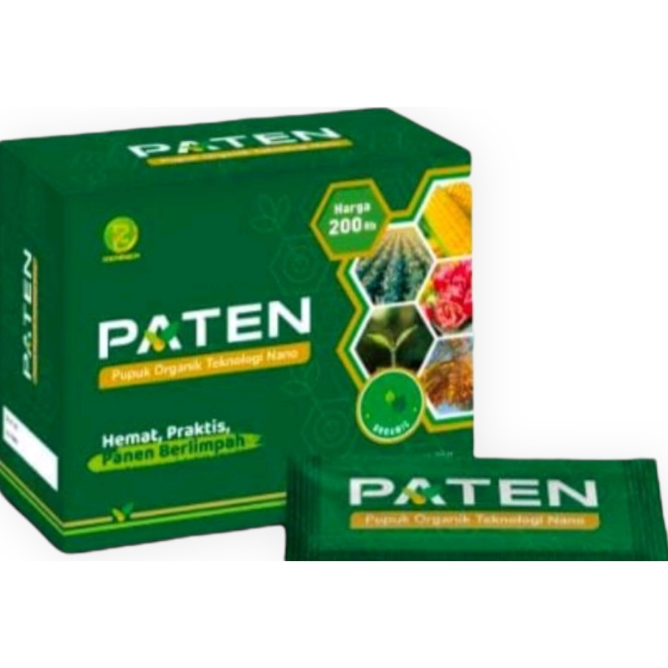
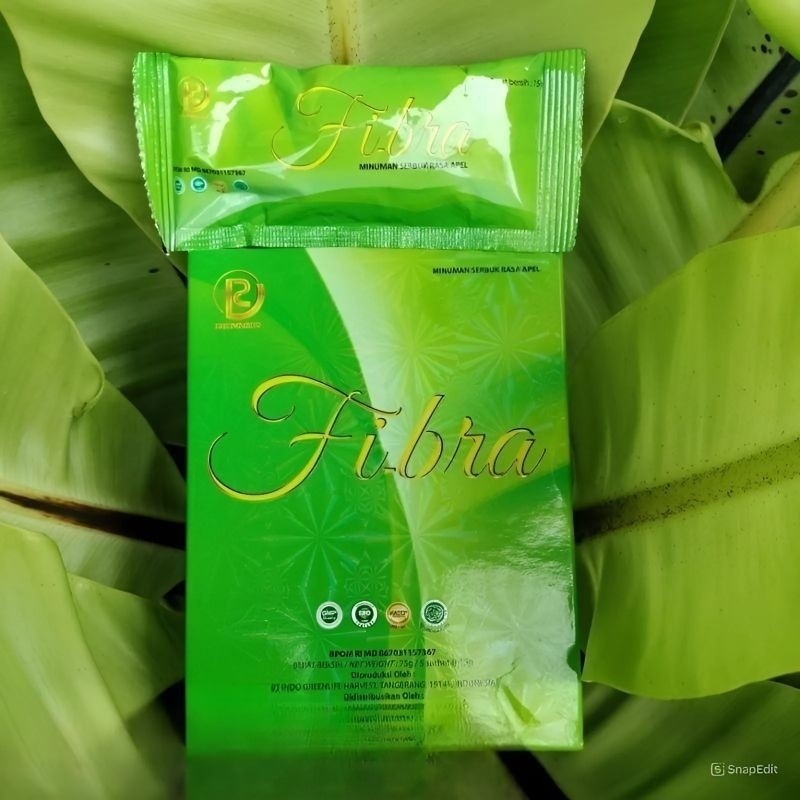
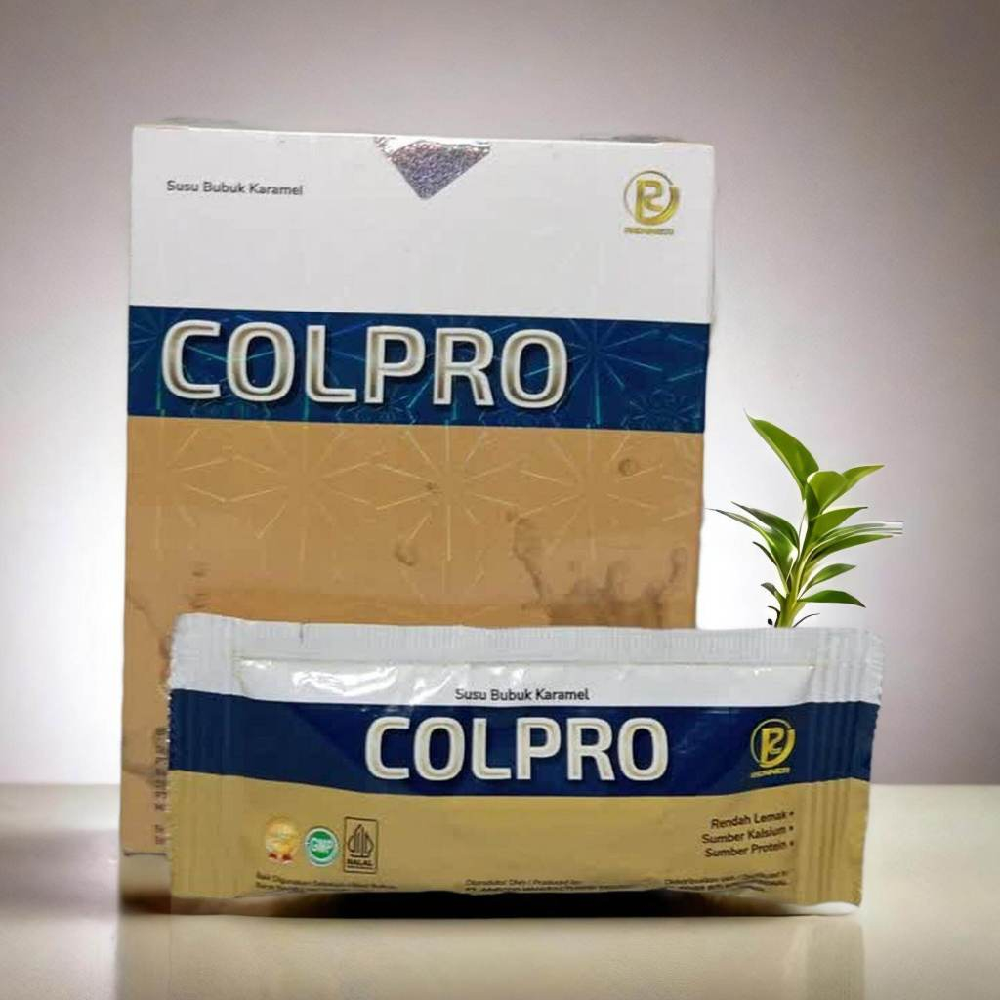
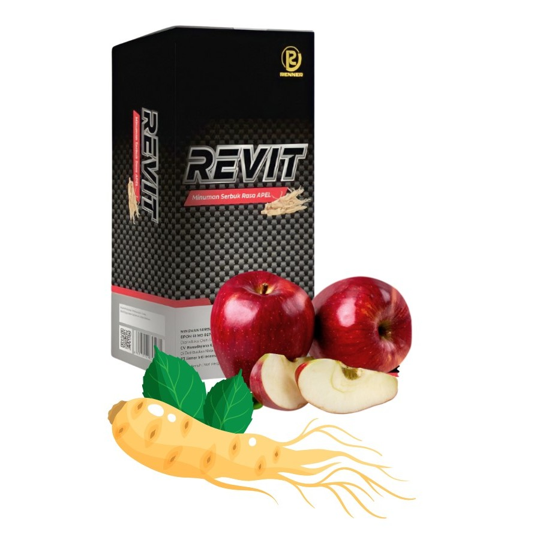
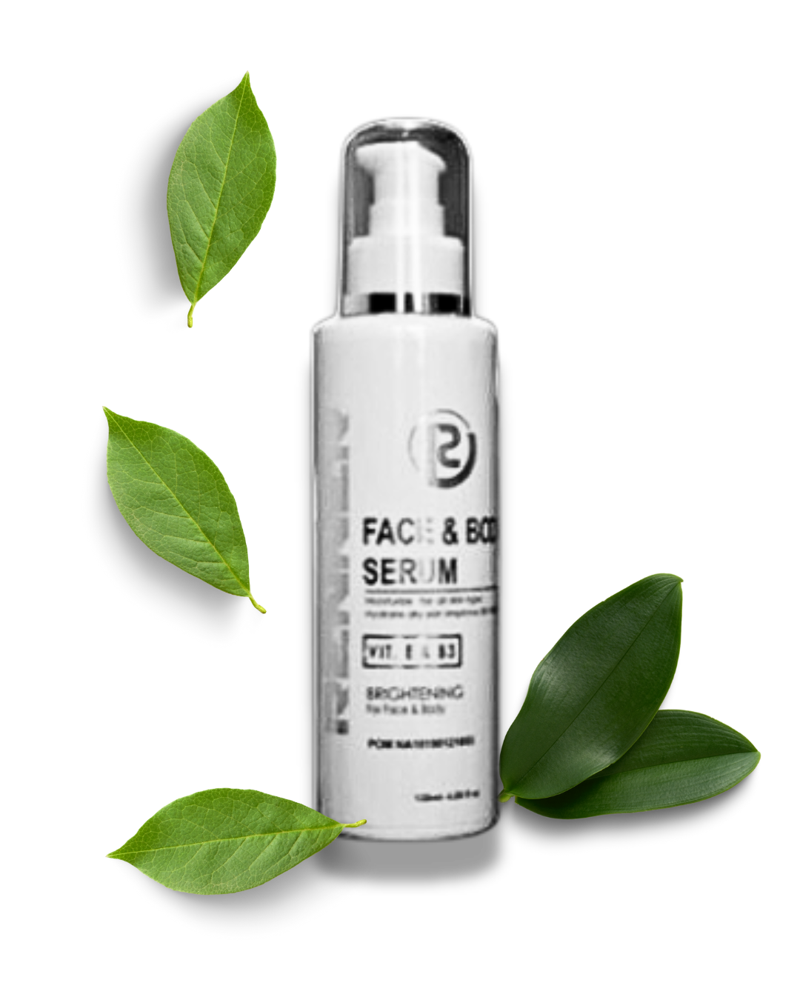

Produk Berkualitas
Rangkaian produk pilihan dengan standar kualitas tinggi.

PT. Renner Inti Internasional (Renner Syariah) adalah perusahaan yang bergerak di bidang penjualan langsung (direct selling), dengan marketing plan terkini yang dirancang untuk memberikan rasa nyaman dan aman. Sistem ini memastikan terciptanya keseimbangan serta hubungan saling menguntungkan antara perusahaan dan para mitra usahanya.
Manajemen Renner Syariah terdiri dari orang-orang profesional yang telah berpengalaman puluhan tahun di industri penjualan langsung. Dengan wawasan dan sistem yang terbukti berhasil, Renner Syariah menjadi pilihan banyak pengguna produk dan pelaku bisnis yang membangun karier jangka panjang di industri penjualan langsung.
Mitra Reseller & Distributor Resmi Renner Syariah
Renner Syariah menghadirkan rangkaian produk pilihan untuk mendukung kebutuhan kesehatan, kecantikan, dan pertanian modern Anda — diracik dengan standar kualitas tinggi dan dipercaya oleh banyak pelanggan.
Rangkaian produk pilihan dengan standar kualitas tinggi.
Dipasarkan langsung oleh mitra reseller & distributor resmi.
Kesehatan, kecantikan, hingga pertanian modern dalam satu tempat.
Konsultasi & pemesanan langsung melalui WhatsApp.
Berikut beberapa produk unggulan yang menjadi media promosi untuk mengenalkan solusi kesehatan, kecantikan, dan pertanian modern.
Kenali ragam produk Renner Syariah melalui video berikut. Untuk informasi resmi dan pemesanan, silakan hubungi agen kami.

Pupuk Organik Teknologi Nano Kemasan Sachet.
Nutrisi siap saji untuk tanaman, mempercepat panen, merangsang pembuahan luar musim, menghemat pupuk kimia hingga 100% dan pestisida hingga 80%, meningkatkan imun tanaman terhadap virus/bakteri.

Minuman Serbuk Rasa Apel.
Detoksifikasi zat karsinogen/berbahaya dalam usus, melancarkan BAB (laksatif alami), membantu menyeimbangkan berat badan, sebagai prebiotik & sumber serat pangan.
BPOM RI MD 867031157367

Minuman Nutrisi Colostrum Murni.
Sumber protein & kalsium alami (untuk bayi hingga lansia), memelihara & meremajakan sel tubuh yang rusak, meningkatkan sistem kekebalan tubuh.
BPOM RI MD 805028152052

Minuman Serbuk Rasa Apel Plus Ginseng.
Meningkatkan stamina, vitalitas, dan kejantanan pria, melancarkan peredaran darah, mengatasi disfungsi seksual.
BPOM RI MD 867028027695

Serum Pencerah Wajah & Body Lotion.
Mencerahkan kulit tubuh & area lipatan gelap, melembabkan, mengencangkan, menyamarkan flek hitam/bekas jerawat, melindungi dari sinar UV.
BPOM NA 18220106292
Masri Jono Mpeti adalah mitra reseller dan distributor resmi Renner Syariah yang siap membantu pelanggan menemukan produk sesuai kebutuhan kesehatan, kecantikan, dan pertanian.
Melalui layanan yang informatif dan mudah dihubungi, Masri membantu calon pelanggan memperoleh informasi produk, manfaat, ketersediaan, serta proses pemesanan dengan lebih jelas.
Untuk keputusan penggunaan produk, selalu perhatikan label, aturan pakai, nomor izin edar, dan petunjuk resmi pada kemasan. Hindari penggunaan klaim sebagai pengganti saran tenaga kesehatan.
Hubungi Masri Jono Via WhatsAppHubungi Masri Jono Mpeti untuk mendapatkan informasi produk dan pemesanan.
Chat via WhatsApp